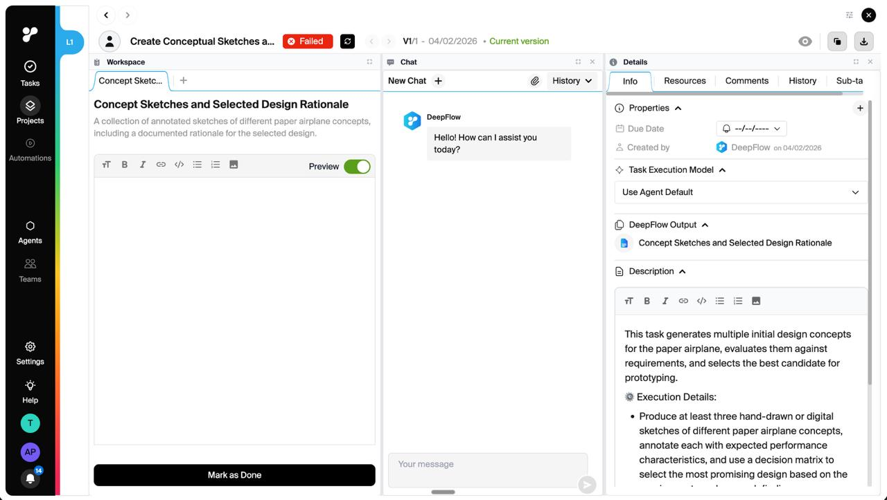
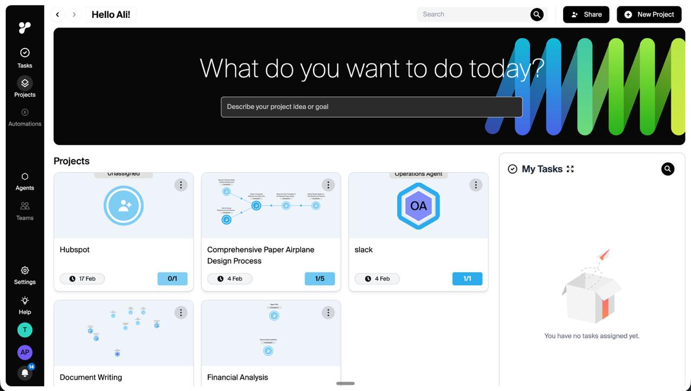
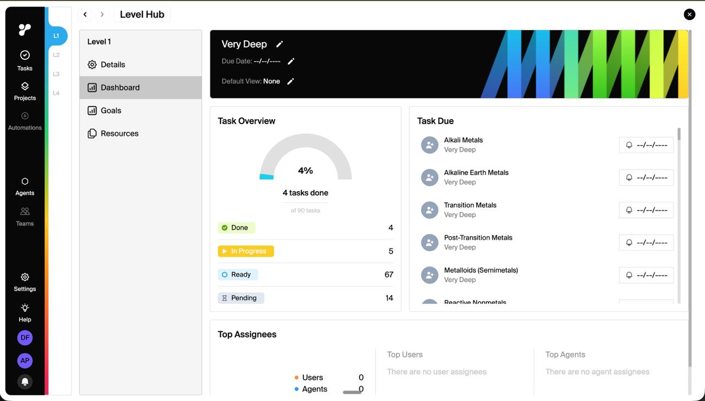
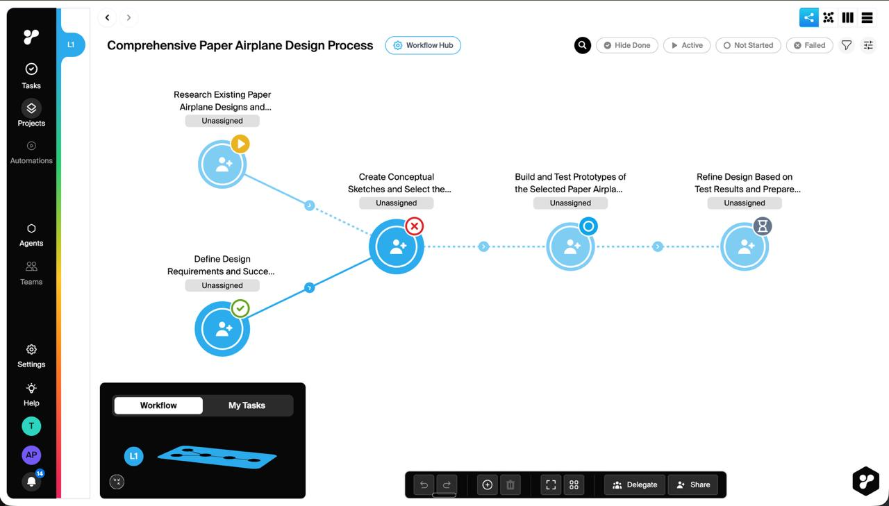
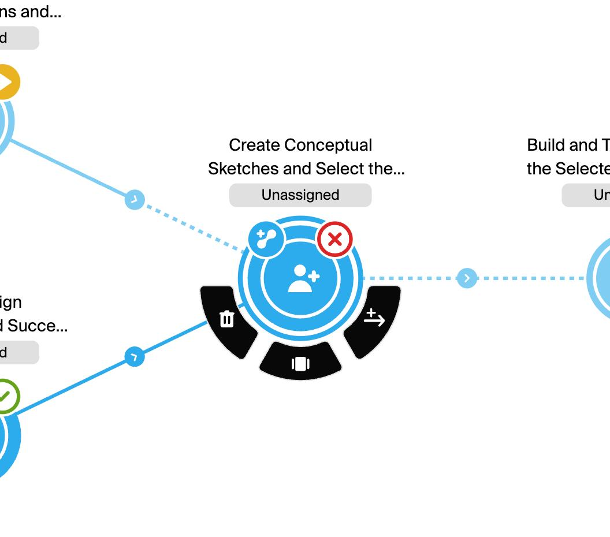
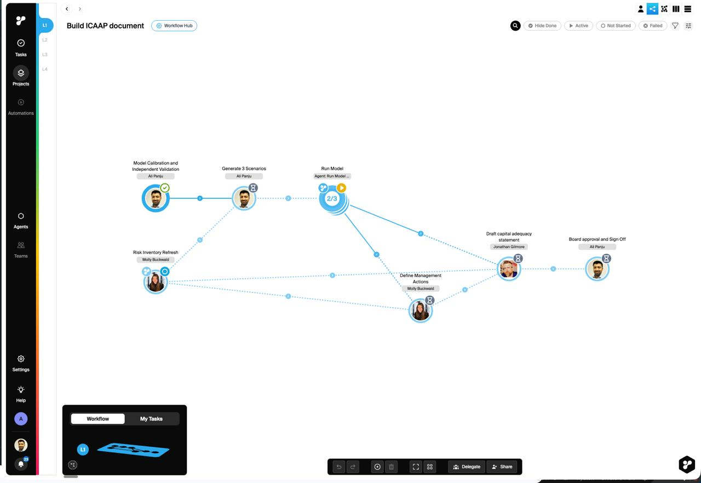
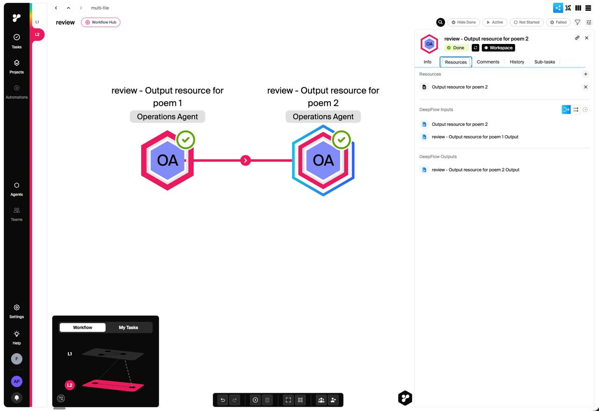
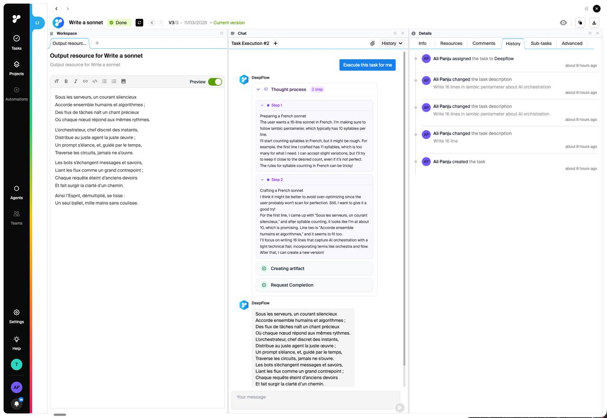

Executive Summary
The new design guidelines are structurally excellent — well-documented tokens, clean wireframes, solid component architecture, and a thoughtful Hub Bar specification. They tell engineers what to build. The problem is they don't tell them how it should feel.
The old DeepFlow product had genuine visual personality: concentric-ring avatar nodes, cyan-drenched dependency edges, generative art hero banners, a dark sidebar with the branded ψ mark, 3D isometric minimaps, and a radial action menu that looked like nothing else on the market. The new guidelines have filed those rough edges smooth — and produced a tool indistinguishable from Linear, Notion, or any post-2023 SaaS product.
This is the central tension: clarity was gained at the cost of identity. The fix isn't to go backwards. It's to take the old product's distinctive DNA and embed it into the new guidelines' excellent structural foundation. Restore the circular nodes. Animate the edges. Bring back the gradient. Make the graph bleed into every screen. And for Ravi: make every screen answer one question before he has to ask — "What needs my attention right now?"


- Always-on positioning (Option B) is correct for Ravi — chat is always there, like WhatsApp on his phone
- Context badge showing which project/task the chat is scoped to prevents cross-context mistakes
- Action chips ("Summarise", "What's blocked?", "Next steps") reduce cognitive load of formulating prompts
- Thought process disclosure (6-step expandable section) builds trust — it's a colleague showing their working, not a black box
- The input bar is a grey rectangle with "Message DeepFlow..." placeholder — every chat app since 2015
- Message layout (light bg for AI, different bg for user) is the ChatGPT/Claude commodity pattern
- No personality in the AI's voice — responses read like reports, not an engaged assistant
- Sidebar icons are ultra-thin line icons that could belong to literally any SaaS product
- Dark sidebar (
#1A1A2E) provided contrast framing — chat felt like a "window" into the workspace - DeepFlow ψ avatar in cyan gradient for AI messages — immediately identifiable
- Thought process steps with cyan bullet dots (
#22D3EE) and bordered expandable blocks - Chat send button used brand cyan gradient — a small but consistent brand touch
- Workspace panel alongside chat made the conversation feel purposeful and integrated
- Dark sidebar framing — contrast between dark chrome and light content created visual depth
- The ψ brand mark appearing in chat context
- Colour temperature shifted from warm/cyan-dominant to cold/neutral-blue
- Visual density — old chat existed alongside workspace content; new is a full-screen takeover
- Typography appears to be system/Inter — not Euclid Circular B
📋 Combined Recommendations
📋 This Task / 📂 This Project / 🏠 Everything. Ravi flips between projects all day — quick context switching is essential.#111118). Active icons should glow cyan with a subtle drop-shadow. The send button should use the brand gradient, not generic blue.#E0F7FA, not Tailwind blue #EFF6FF). Use asymmetric border-radius (12px 12px 12px 4px) for distinctiveness. User messages should use the brand gradient.He wouldn't — for quick coordination. WhatsApp is faster, more familiar, and where his people already are. DeepFlow's chat wins only when it can do things WhatsApp can't: execute workflow actions, reference task state, show dependency intelligence, insert content into documents. Every message should be capable of doing something, not just saying something.


- Right data for Ravi's morning: tasks due today, blocked items, awaiting approval
- Project cards with progress bars allow multi-workstream scanning
- "What do you want to do today?" CTA positions DeepFlow as a tool that acts, not just displays
- "Good morning, [Name]" greeting is warm without being saccharine
- Greeting + stat cards + project grid is the default SaaS dashboard pattern since 2019 — Asana, Monday.com, ClickUp all have this exact layout
- Stat cards are passive numbers — Ravi sees "3 blocked" but has to click through to find which and why
- Graph thumbnails at card size are unreadable visual noise — decorative rather than informative
- "My Tasks" empty state with cartoon illustration is the epitome of SaaS-generic
- Generative art hero banner — procedurally-generated teal/cyan/lime/yellow geometric blocks on dark background. No generic SaaS has this. It's DeepFlow's strongest visual signature.
- Project cards contain miniature graph thumbnails showing actual node-and-edge topology — a killer differentiator
- Level Hub's left navigation (L1/L2/L3/L4 tabs) gives structured depth navigation missing from the flat new wireframe
- Donut chart + status breakdown is more information-dense than the new wireframe's stat row
- 3D isometric illustration for empty state — custom rendered asset, not a generic SVG
- Generative art banner completely absent from new guidelines
- Graph thumbnails in cards — old product shows mini DAG previews
- Information density — old dashboard feels like a command centre; new wireframe feels like a greeting card
- Dark-background hero area — contrast creates hierarchy; pure white on white flattens everything
- The rich visual density of the Level Hub is lost in the minimal new spec
📋 Combined Recommendations
#0A0A0F → #111118) with procedural teal/cyan/lime/yellow accent blocks. Consider a canvas-rendered approach or positioned absolute div elements.#22D3EE, edges as 1px lines in #7DD3FC. Show real workflow topology, not just text.Email wins because it shows what other people need from Ravi. DeepFlow's dashboard currently shows what Ravi's projects look like — useful but less urgent. To beat email as the first morning check, the dashboard needs to surface inbound demands: "Client X is waiting for the ICAAP draft (3 days overdue)", "Agent completed the financial analysis — review before auto-sending." Make it an inbox of workflow events, not a gallery of project cards.




- The DAG canvas IS the product — when Ravi shows a client his ICAAP workflow, they get it immediately
- Inline expansion concept (parent → container showing children) solves navigation without losing context
- Hub Bar spec is well-designed: collapsed 36px with progress + status + avatars gives Ravi a glance
- Node hover actions (Start / Done / Rerun / Open) eliminate unnecessary detail panel visits
- New node design is a rounded rectangle with left accent border — the Linear/Asana/ClickUp pattern
- Nodes specified as ~180×72px white cards with thin borders — safest possible choice, least memorable
- Edge styling is standard React Flow out-of-the-box bezier curves
- Dot grid background is the default canvas pattern for every graph tool since Miro
- Concentric ring nodes: ~60px circle with 3-4px outer ring, ~2px gap, filled inner circle. Ring colour encodes status. No other product looks like this.
- Avatar integration: Human tasks show actual photos clipped to the inner circle. You see who before what.
- Radial action menu: Dark arc-shaped menu fans out below clicked nodes — looks like a flight instrument panel. Completely custom, highly memorable.
- Cyan dashed edges with waypoint dots and directional chevrons — consistent visual flow guiding the eye along dependency chains
- 3D isometric minimap rendering workflow depth as visual layers — not a flat React Flow minimap
- Shape-per-depth coding: Pink/magenta hexagonal nodes for one level, cyan circular for another — powerful dual-encoding
- Satellite status badges: Small 16px circles at node edge (2 o'clock) with ✓/✕/▶/◯ icons
- Concentric ring system → replaced with "status dot" on nodes. Flattens "radar/sonar" to "Kanban card with dot"
- Radial action menu not mentioned in guidelines at all
- Edge waypoint dots and directional chevrons unspecified
- Photo avatars clipped into ring — treatment unspecified
- 3D isometric minimap → standard React Flow MiniMap
- Organic curved edge routing → default React Flow straight/step edges
- Swimlane colour bands partially preserved but opacity values unspecified
📋 Combined Recommendations
#1F2937) with icon actions. Hover state glows cyan.#7DD3FC, 2px). Conditional as dashed (stroke-dasharray: 6 4). Waypoint dots (3px, #BAE6FD) along paths. Directional chevrons in 8px circles at midpoints. Use bezier curves (curvature: 0.25), not step/straight.#111118), each depth level as a tilted plane (30° isometric angle), nodes as coloured dots on each plane, segmented control "Workflow | My Tasks", level badges in cyan pills. Significant engineering effort — but one of DeepFlow's most distinctive elements.The old product's graph was memorable because it looked like nothing else. Circular avatar nodes with cyan rings on a dark canvas — that image sticks. Rectangular cards on white canvas with dot grid? That's React Flow's default demo. The graph also needs to feel alive. A static diagram is a Visio document. A living system — pulsing nodes, flowing particles, heat-mapped minimaps — is an operating system for work.

- Three-pane layout (Chat + Canvas + Detail) is correct — document, AI assistant, and task metadata simultaneously
- Tabbed canvas (multiple resource tabs — editor, PDF, spreadsheet, agent log) solves reference without modal switches
- "Execute this task for me" button is the product's magic — one click delegates to AI
- AI thought process disclosure in chat pane — Ravi sees exactly what the agent did and why
- Version management (V3/3, navigation arrows) is critical for client-facing documents
- Three-panel layout IS the commodity pattern — Linear, Notion, every modern SaaS editor
- Rich text editor (Tiptap) with formatting toolbar is every editor you've ever seen
- Detail Panel tabs (Info, Resources, Comments, History, Sub-tasks) look exactly like Jira/Asana
- The workspace has always been DeepFlow's least distinctive screen
- Version indicator "V3/3 - 11/03/2026 • Current version" — unique document-version-control feel
- Status badges use saturated fills (red
#DC2626, green#059669) — bold, not washed-out pastels - Panel resize handles visible between columns — professional, functional
- Preview toggle with green indicator in the toolbar
- Panel chrome differentiation — risk of all three becoming identical white rectangles
- Status badge boldness — new guidelines define muted
rgbabackgrounds that don't POP - Visual density — "clean SaaS" risks reducing useful density to empty space
- The old dark sidebar provided a strong visual anchor; new 56px light sidebar is weightless
📋 Combined Recommendations
ICAAP 2026 → Capital Modelling → Stress Test → [This Document]. Input dependencies as collapsed cards above the editor: "✅ Risk Assessment (complete) | ⏳ Data Validation (in progress)". Notification banner when inputs change upstream.::after element (2px top line).border-image: linear-gradient(90deg, #00E5FF, #2244FF) 1. Panel dividers reveal brand gradient on hover/drag.background: #DC2626; color: #FFFFFF) for prominent status, NOT the muted rgba(220, 38, 38, 0.08) default. Saturated fills make it impossible to miss a failed task.MS Word is an island. DeepFlow's workspace should feel like a node in a living network. It wins if writing the document automatically progresses the workflow, if the AI drafts sections from upstream outputs, if completing the document triggers downstream actions without Ravi needing to email anyone. The workspace must feel like it has momentum — work here ripples outward through the graph.
Themes Across All Screens
Patterns that affect every view — and need system-level solutions.
The guidelines optimised for implementability (clear specs, standard patterns) at the cost of distinctiveness (visual signature, bespoke interactions, emotional resonance). The system became so well-specified it specified the personality right out of the product.
Fix: Create a "DeepFlow DNA" section defining 4 elements that must appear in EVERY screen: the circular node motif, the brand gradient, the concentric ring pattern, and cross-element connecting lines.
The graph is the product's soul, but currently only appears in one view. Every other screen feels like a different product. The graph's visual language should be a design vocabulary used everywhere:
Dashboard cards should look like large graph nodes. Chat references should render as mini nodes. The workspace should always show its graph context. Even the sidebar could show a vertical dependency chain.
Every screen in the guidelines is static. But Ravi's workflow is dynamic. The guidelines don't specify: how a node's status change animates, how a new chat message arrives, how the dashboard updates when an agent completes work, how progress bars fill in real-time.
A product that moves thoughtfully feels alive. Define a motion language: ease curves, duration ranges, what triggers animation vs. instant transition. This is a major gap.
The old product runs on a dark sidebar with dark canvas elements. The new guidelines default to light. The dark treatment made cyan nodes and gradient banners pop. On light backgrounds, they feel washed out.
Recommendation: Sidebar should be dark in BOTH themes (like Slack, Discord). The graph canvas should have a dark background regardless of app theme. Think of it like a planetarium: light workspace, dark sky with bright constellation nodes.
The Single Line (2px gradient accent) is a good micro-pattern but can't carry the entire brand. At 2px, it's easily missed. The brand needs to show up in node styling, background treatments, interactive fills, AI identity markers, and motion (cyan glow pulses when agents work). The Single Line should be an accent, not the entire visual vocabulary.
The brand gradient goes cyan → sky blue → blue. The old product leans cyan-dominant. The new guidelines define --brand-solid: #0077DD which is a cooler, generic blue.
Primary interactive colour should be #0099FF, with #22D3EE (cyan) used extensively for graph elements and accents. Reserve #2244FF for gradient endpoints only. The product should feel cyan-forward, not blue-forward.
Brand Distinctiveness Checklist
Before any screen ships, it should pass these 14 checks. If Ravi screenshots it and sends it to a colleague, would they know it's DeepFlow?
#22D3EE / #00D4F5 appearing more than #3B82F6rgba backgroundsPriority Actions — Ranked
What to fix first. Ordered by impact-to-effort ratio, combining both UX and visual considerations.